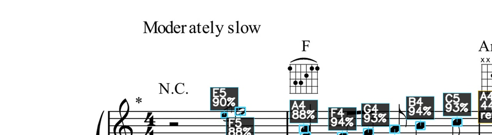
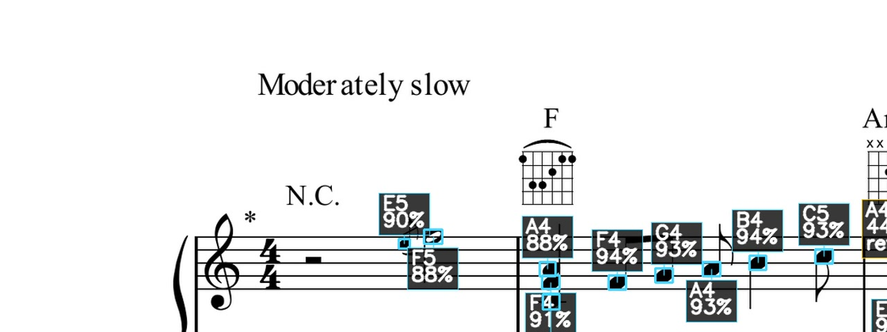
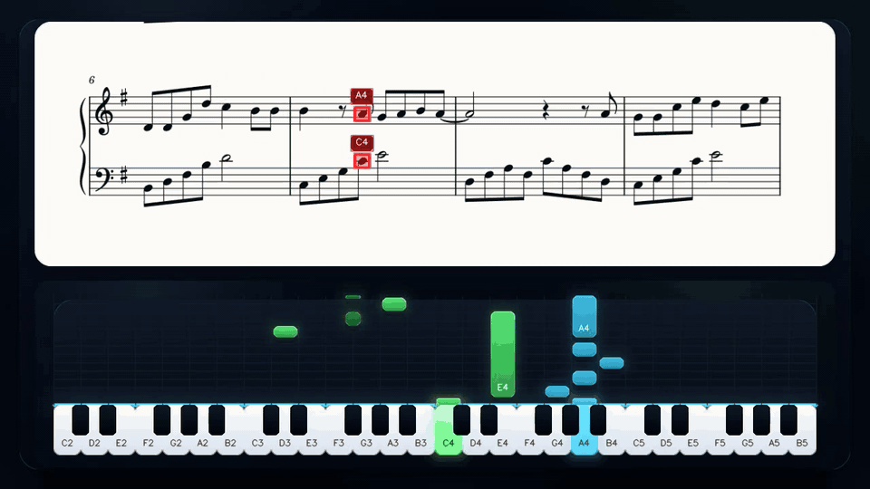
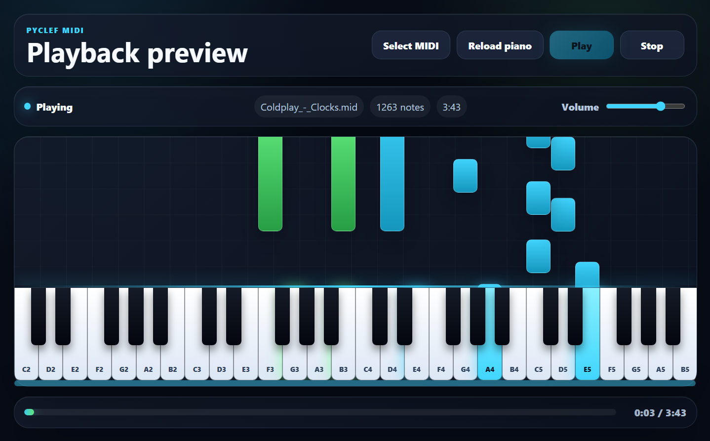

Install from PyPI
Use pip when you want the Python package, command-line entry point and programmatic API.
pip install pyclefDocumentation
PyClef can be used as a Windows desktop app or from Python. This guide covers installation, processing options, generated files, MIDI playback and review tools.


Use pip when you want the Python package, command-line entry point and programmatic API.
pip install pyclefOpen the desktop interface from the terminal or from a Python script.
pycleffrom pyclef import Pyclef
Pyclef()PDF input uses Poppler. MP3/video exports use FFmpeg. SoundFont rendering uses FluidSynth. The desktop diagnostics panel reports what is available.
Poppler -> PDF pages
FFmpeg -> MP3 and MP4
FluidSynth -> SoundFont pianoGuided interface tour
The desktop flow moves from score selection to progress tracking and result review. Screenshots adapt to the current website theme.
Start from a focused welcome screen and move into the score workspace when ready.


Select PDF or image files, set BPM and choose how much information PyClef should generate.


Use presets for review, listening or video, then fine-tune annotation, audio, MIDI, video and report options.


Follow the progress bar and optional technical logs while detection, inference and export run.


Open the result folder, annotated pages, audio, MIDI, video and scientific report from one place.
Function reference
PyClef keeps common actions visible and places experimental controls in advanced options.
Loads PDF, PNG, JPG or JPEG files and creates a result folder from the input name.
Defines the tempo used for MIDI, MP3 and synchronized video timing.
Quickly configures the workflow for review, listening, video sharing or full export.
Exports labeled score images. Clean mode groups close notes; detailed mode includes confidence information.
Renders a listening file using the internal synthesizer or SoundFont piano when available.
Exports note events for playback, inspection and use in external music software.
Creates score video, piano-roll video or a combined score plus piano-roll review video.
Summarizes confidence, pitch classes, hand distribution, durations and review recommendations.
Optional preprocessing and staff-crop recovery can help dense scans while keeping review data visible.
Generated outputs
Each run creates a result folder with annotated pages and the optional playback files selected in the interface.

The annotated page keeps the original staff visible while adding note names, hand colors and review markers.

Detailed labels expose confidence percentages and mark notes that may deserve a closer manual check.
Generate an audio file for listening checks, sharing and quick musical review.

The synchronized video can combine the active score region with a piano-roll view, making playback easier to study.

The player loads generated MIDI, applies the piano SoundFont and shows timing with a waterfall view and responsive keyboard.
MIDI Player
Use the integrated player to inspect timing, hand separation and note density before sharing the final result.
Notes fall toward the keyboard in sync with playback, making timing problems easier to inspect.
The piano range adapts to the MIDI file and labels white keys with note names.
Right-hand and left-hand notes use different colors, including darker tones for black-key notes.

Python API
The desktop app is the easiest entry point, but the processing engine can also be called programmatically.
Pyclef()Starts the desktop application from Python.
from pyclef import Pyclef
Pyclef()process_score_files()Runs the OMR pipeline and returns paths for generated outputs.
from pyclef import process_score_files
result = process_score_files(
["score.pdf"],
bpm=90,
output_options={
"annotations": True,
"audio": True,
"midi": True,
"video": False,
"scientific_report": True,
},
)collect_environment_diagnostics()Checks whether model files, PDF tools, FFmpeg, SoundFont and FluidSynth are available.
from pyclef import collect_environment_diagnostics
for check in collect_environment_diagnostics("en"):
print(check.name, check.status)